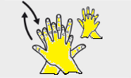
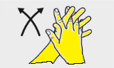

Con los dedos entrelazados, frótese la palma de una mano contra el dorso de la otra, repetiendo para cada mano.

Con los dedos entrelazados, frótese las palmas de las manos entre si

Frótese el dorso de los dedos de una mano con la palma de la mano opuesta, agarrándose los dedos